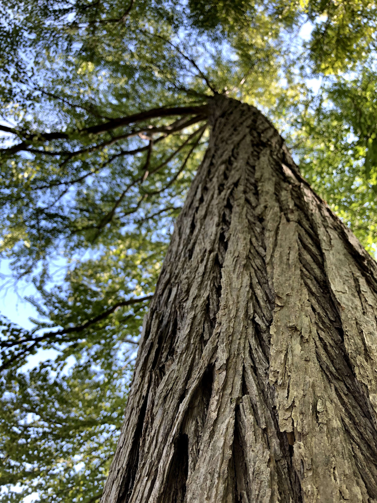

より良い明日や未来の為に
今すぐ行動しよう。
ここに説明文が入ります。下記文章はレイアウトを見るための参考文です。
初めてSEEDのベーグルをご注文される方や、少しお得にご購入されたいお客様に喜ばれている 「おまかせベーグル10個セット」が数量限定で入荷しております。初めてSEEDのベーグルをご注文される方や、 少しお得にご購入されたいお客様に喜ばれている「おまかせベーグル10個セット」が数量限定で入荷しております。
ベーグル10個セットが数量限定で入荷しております。
Act now for
a better
tomorrow.

SDGs Act NISEKO
1990年ころに地球の環境問題という言葉を聞くようになってから30年が経ちました。
2000年代になるとポイントオブノーリターン(引き返し不能点)という聞き慣れない言葉とその内容に驚いたのを覚えています。 環境省は「およそ20年で日本全国のゴミ の埋め立て場・最終処分場が満杯になり、ゴミを埋め立てできなくなる」と言い、 2050年の海は魚の量よりも海洋ゴミの方が多くなると言われています。
昔からずっと聞いてきた「〇〇年にはこうなる」という環境問題の話に対して、 僕たちの答えはAct Now for a better tomorrow「少しでもより良い明日や未来の為に今すぐ行動しよう。」です。
木を植える、木を使う。
2015年のCOP21(パリ)で発足した4/1000 initiativeの考え方 「世界の土壌炭素を毎年0.4%増加させることができたら、大気CO2濃度の上昇を止められる」という考えを元に、 微力ながらも少しずつ木を植え続けること。同じ理由で炭素循環を自社の畑の農法に取り入れている。 そこで採れたメロンやブルーベリー、ハーブ、ブドウなどを使う。
ショップ什器備品類などは木材を使うということ。 そしてその木は近隣の木材であるという事が大切。 使い捨てで排出されるゴミは、燃やしたり、微生物の力を利用するとゼロになるものを使用すること。 (麦を使ったストロー、生分解性プラスチックなど)
4/1000 Initiativeとは
• 「世界の土壌炭素を毎年0.4%増加させることができた ら、大気CO2濃度の上昇を止められる」という計算
• 土壌有機物管理を改善して温暖化緩和と持続的食料 生産を目指す
• 現在、日本を含む約280のパートナー(国、NPOなど)
2015.11 COP21(パリ)でフランス政府主導で発足
花を植える、花を飾る、贈り合う。
連日戦争のニュースがテレビや新聞などで報道されています。 戦争する本当の 意味は僕らには全然わかりません。人と人とが争い殺し合い、 何かを奪い合うことは良い事とは言えないと、現代を生きる僕らはそう感じます。 しかし、古代ローマの市民たちにとって、コロッセオという場所は人や猛獣が戦うという 刺激的な見世物を楽しむための遊戯施設でした。 今の時代では到底理解されない娯楽ですが、当時では普通のことでした。
人の常識というものがどのようにして変化してきたのか? その答えの一つに哲学者の一人が「それは教育である」と言っています。教育環境や日々の生活の中で、 人々の常識や価値観が変化し、時には残虐に、時には平和であったりと時代が変化してきました。 庭に沢山の花を植えると、蜂や蝶、蛾などの昆虫をはじめ、カエルなどの小動物を見る機会が増えました。 その花を摘んで家に飾ったり、ハーブウォーターにして暑い日の喉を潤したり、 時には友人やお客様への商品に添えたりします。
花やガーデンを通して見えてくる世界や 人と人とのコミュニケーションはとても心地よく平和的です。 ショップには畑で採れた花を飾りたいと思います。
古いものを大切にする。
さいとう製パンのお店に入ると、周りは1960年代のレジスターや1970年代のオーブンなど、 店内や厨房は古いものだらけです。先代が機械に油をさしながら、大切に使ってきたものを受け継ぎました。 有島のカフェで使う什器備品類も古い家具ばかりです。 新しいものや機械を揃える前に中古のものを検討してみる事が、環境には優しいことだと思います。
一方で、こんな試算結果もあります。 新車のエコカーに買い替えるのと、旧車のガソリン車を長く使い続けること、 どちらが環境負荷が少ないのか? 新車を生産する際の環境負荷も考慮に入れて計算すると、 1年1万キロ走る条件では7年でエコカーが追い抜くそうです。
古いものを大事に使いながら、新しい技術も取り入れながら、 より良い未来につながる今を作っていく事が大切であり、常に思考し続ける事を忘れてはいけないと感じています。